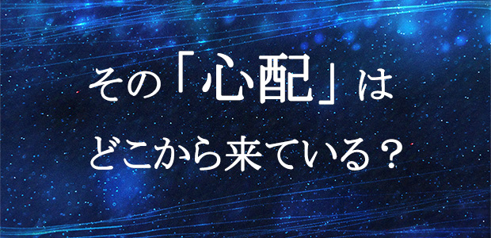

前回まで「子どもを心配すること」は良くないという内容の話をしました。
さらに子どものアレコレについて先回りして心配するのではなく、信じて手放すことをおすすめしたわけですが、なかなか実行に踏み切れない方が多いようです。
現実に子どもがダラダラしているのを見ると親としては小言の一つも言いたくなるものです。
試験近くなのにゴロゴロして一向に勉強に取り掛かる様子が見えない。いつまでもスマホでLINEやゲームをしている。
塾の宿題も直前にあわててやっている…等々。
これらの光景を目の当たりにすると親は不安にかられるものです。まして日頃あまりうるさく言うのもと思って我慢していた分、イライラが高じてつい怒りが爆発という事態も珍しくありません。
そうなると私が提唱する「信じて手放せ」の教えなどたちまち忘却の彼方に吹き飛んでしまうでしょう（笑）。
そんな気持ちでしょう。
同じ子を持つ親としてその心境は理解できますが、それでも心配は役に立たない事実は動きません。
今回はそのことを角度を変えて話します。
子どもの言動にいちいちリアクションしてませんか？
まず、子どもの「ダラダラ」を見てイライラしたり不安になるということは「子どもの姿」に反応している。リアクションしているということです。このことを理解してください。
ここには親の自立性が存在しない。
そして子どもの側から見ると、親のイライラ、不安、心配がまずありそれに反応して勉強するフリをしたり、怒られる前に形だけ取り繕っておこうという防衛的姿勢が出てきます。
つまり子どもは子どもで親の反応に反応している。親の心配から身を守るために防衛にエネルギーを注ぐので、たとえ勉強し始めても形だけで効果は上がらない。
こうしてお互い「反応」に反応し合うという、つまりマイナスのエネルギーをぶつけ合い消耗する悪循環におちいるわけです。
この無限ループから脱出するにはどうすればいいか。
それにはやはり最初に言った、自分（親）が子どもの姿に反応（リアクション）したことに気づくことが第一です。子どもの姿にいちいち反応することは子どもにコントロールされているということです。主導権を子どもに奪われているわけです。
ですから、自分の感じた不安や心配は、子どもの姿に反応したに過ぎないことに気づけば不安や心配はひとまず消えます。「あ～自分は今イライラしている」「子どもがダラダラして勉強しないから不安なんだな」という具合に。
その上で、なぜ子どもが勉強しないと心配になるのか、ダラダラしているとイラつくのかその理由を静かに考えてみてください。
その心配には本当に根拠はあるのか。
単に自分も自分の親から言われ続けて信じた「常識」ではないのか。
「勉強しないと将来困るぞ」と言われ続けたから自分も子どもに「勉強すべきだ」と感じているだけではないか。
こう考えていくと色々なことに気づきます。
子どもはたまたま部活で疲れて居眠りしているのかも知れません。少し寝たら勉強しようと思っているのかも知れません。
子どもには子どもの事情もあります。
その結果として今の姿がここにある。
そう思えたら余裕も生まれるでしょう。
やたら子どもの姿に反応し、それを悪いことだと判断し不安や心配を募らせる。その背景に親自身が知らず知らずに身につけてしまった、親から伝えられた価値観や世間の常識などの様々な固定観念がある。
それに気づいたら心配や不安は消えていきます。
その瞬間がまさに信じて手放した状態なのです。
「信じて手放す」はメソッドではありません。
子どもに何かをさせるための方法ではないのです。
先に親自身が気づくこと。自分自身の中に余計な観念や思い込みがたくさんあることに気づく。それが「現実のありのままの子どもの姿」を見えにくくさせていていたと知る。そうすれば心配や不安は自然と消えていきます。その状態こそが「信じて手放す」なのです。
親は心配したりお説教することで親の役目を果たしているつもりかも知れませんが、子どもを心配するという形で実は、自分の中の不安を顕在化させているだけです。
ますます不安がつのるでしょう。
親の役目は子どもを自立できる人間に育てること。そして自分こそがそのモデルとなることです。
親自身が世間の無責任な「常識」や、自分の親に負わされた「信念」から自由になり、子どもの現状をあれこれ価値判断して一喜一憂せずくもりのない冷静客観な目で見ることができれば、子どもの姿もたちまち変化していきます。
子どもはあっという間に大人になります。
子どもの心配にエネルギーを費やすことなく、毎日の子育てを今楽しむ余裕を持ってください。
そうすれば子どもは伸び伸びと自由に育つものです。